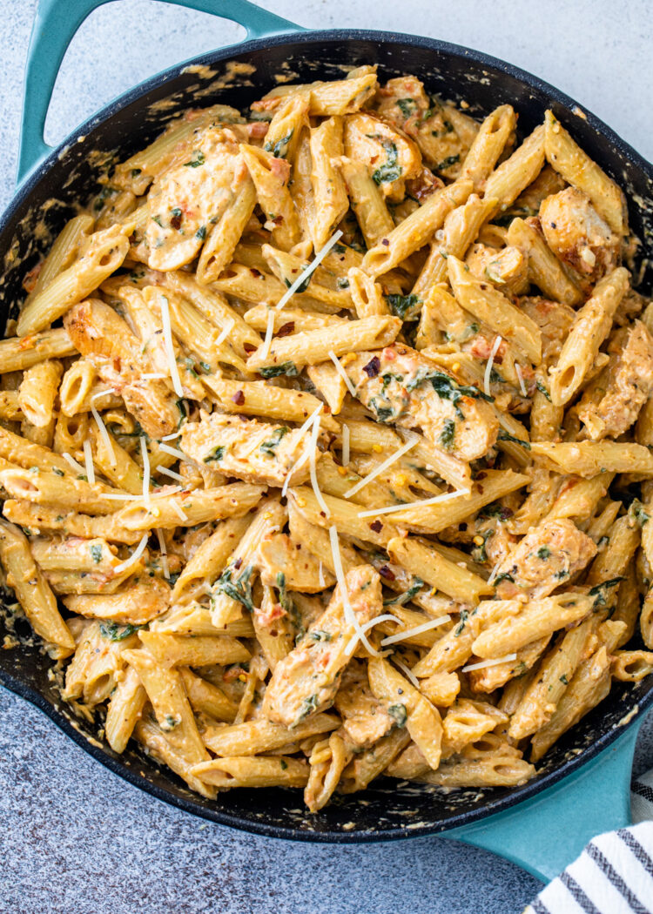

Chicken Pasta

30minute meal for a lovely carribean style Pasta & Chicken
Chicken pasta in a garlic tomato cream sauce is the ultimate comfort meal. Made with pasta, chicken, spinach, seasonings, lots of yummy garlic, and parmesan cheese, you can make this incredible dish in under 30 minutes!
Ingredients:
- Pasta
- Chicken Breast
- Seasonings
- Olive Oil
- Garlic
- Juice of 1 or 2 large oranges
- Almonds
- Mustard
- Parmesan cheese
Step by step guide on how to create this dish:
- - Cook the pasta in plenty of boiling salted water according to the packet instructions. Three minutes before the pasta is cooked, throw the broccoli into the pasta water and continue to boil.
- - While the pasta is cooking, gently heat the oil in a large frying pan or wok. Tip in the chicken and fry, stirring occasionally, until the chicken pieces are cooked and golden, about 8-10 minutes, adding the garlic for the last 2 minutes.
- - Mix the mustard with the orange juice in a small bowl. Pour the mixture over the chicken, and gently simmer for a minute or two. Drain the pasta and broccoli, reserving 3 tablespoons of the pasta water. Toss the pasta and broccoli with the chicken, stir in the pasta water and the almonds, season well and serve.
Return to top of page
Return to main page